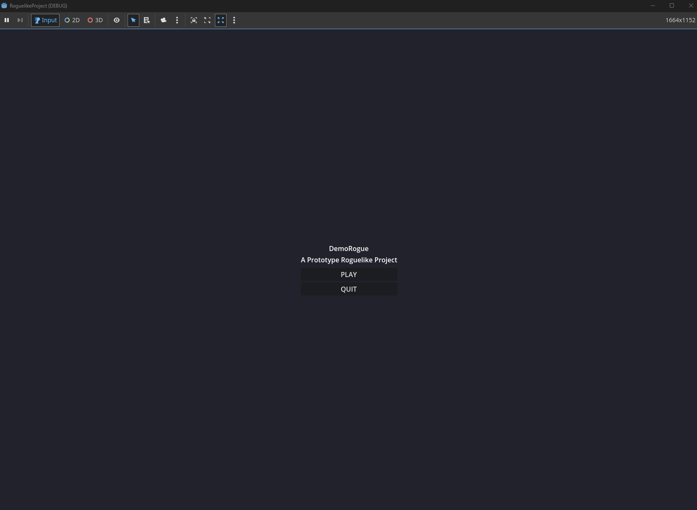
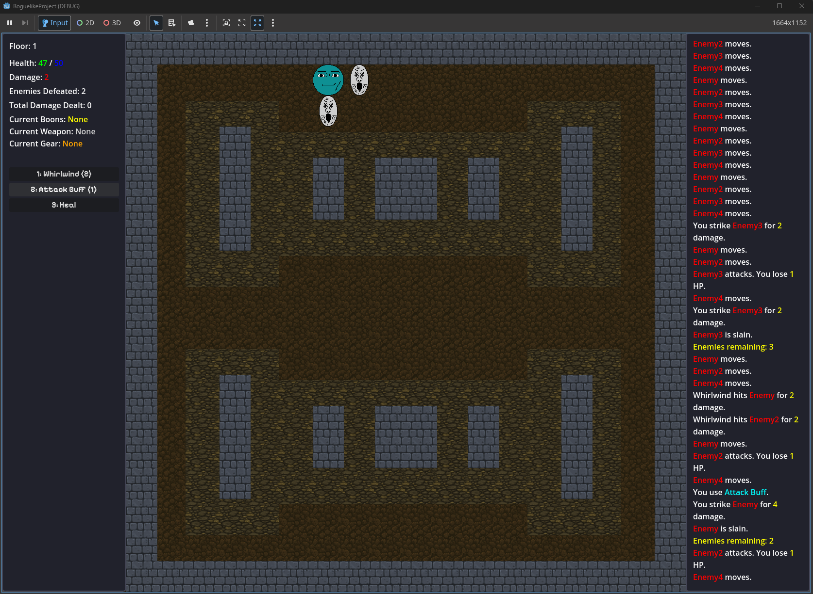
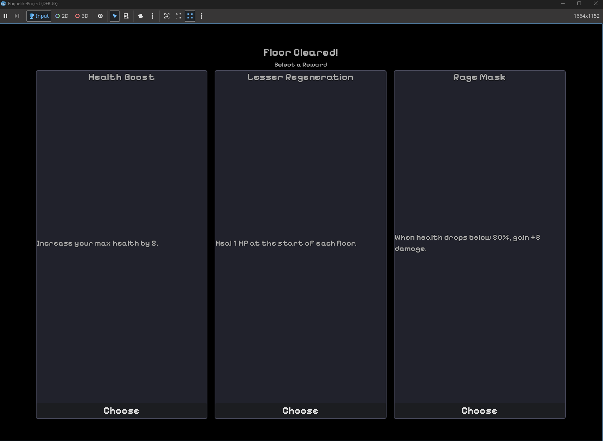
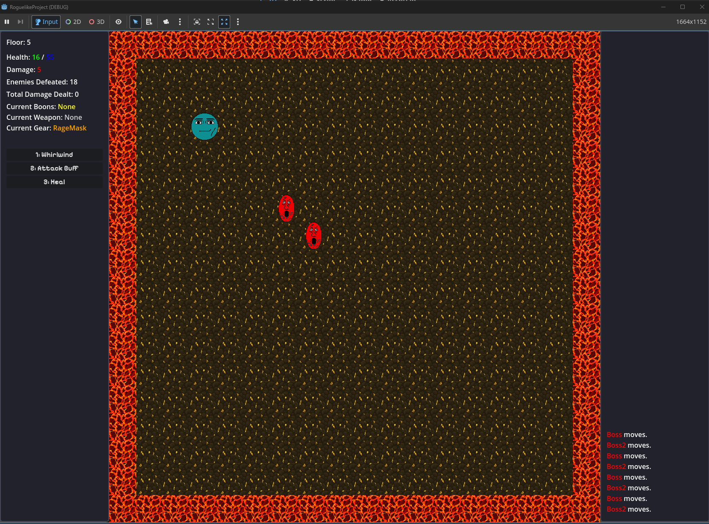
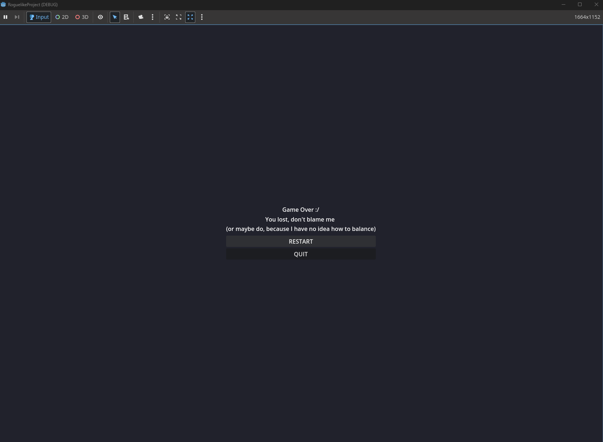

The Godot Grid Roguelike Prototype is a turn-based dungeon crawler built in Godot 4.4.1 with C#. The project focuses on grid-based movement, player and enemy combat, floor progression, rewards, persistent run data, and basic game flow from the start menu through victory or game over.
The prototype uses a scene-based structure with separate scenes for the start menu, combat floors, reward selection, game over, and victory. Combat takes place on tile-based maps where the player moves one grid cell at a time, attacks enemies by bumping into them, and then waits while enemies resolve their turns. Between non-boss floors, the player chooses rewards that modify stats, grant boons, or equip gear for the rest of the run.
This sample shows the derived stat and passive-effect logic from the project.
The RunEffects class calculates effective health and damage based on
the current run state, then applies reward effects such as healing on kill or
gaining permanent damage after defeating enough enemies.
public static class RunEffects
{
public static int GetEffectiveMaxHealth(Player player, RunState runState)
{
int maxHealth = runState.BaseMaxHealth;
if (runState.CurrentGear == RunState.GearType.IronCharm)
maxHealth += 15;
return maxHealth;
}
public static int GetEffectiveDamage(Player player, RunState runState)
{
int damage = runState.BaseDamage;
if (runState.CurrentGear == RunState.GearType.RageMask &&
player.Health * 2 < GetEffectiveMaxHealth(player, runState))
{
damage += 2;
}
if (player.NextAttackBuffed)
{
damage *= 2;
}
return damage;
}
public static void OnEnemyKilled(Player player, RunState runState, Start map)
{
if (runState.OwnedBoons.Contains(RunState.BoonType.HealOnKill))
{
player.Health = Math.Min(
player.Health + 1,
GetEffectiveMaxHealth(player, runState)
);
map.AddLogMessageRaw(
$"[color=green]Life Tap[/color] restores [color=green]1 HP[/color]."
);
}
if (runState.OwnedBoons.Contains(RunState.BoonType.CrushingWeight))
{
int newTier = runState.EnemiesDefeated / 5;
if (newTier > runState.CrushingWeightTiersAwarded)
{
int tiersGained = newTier - runState.CrushingWeightTiersAwarded;
runState.BaseDamage += tiersGained;
runState.CrushingWeightTiersAwarded = newTier;
map.AddLogMessageRaw(
$"[color=orange]Crushing Weight[/color] grants " +
$"[color=yellow]+{tiersGained} damage[/color]."
);
}
}
SyncPlayerStats(player, runState);
}
}This code represents one of the main roguelike systems in the project: rewards and gear do not just change the UI; they affect combat calculations and carry forward through the persistent run state.




